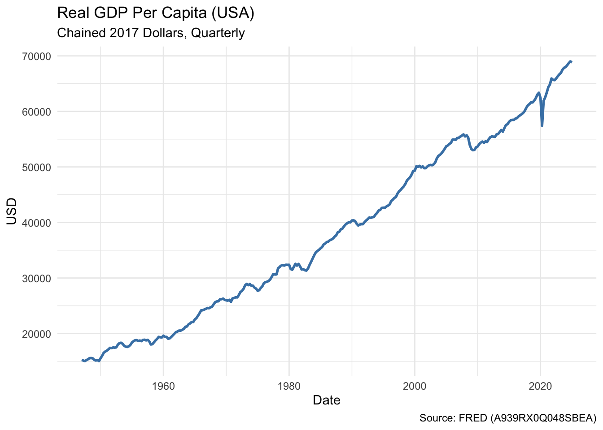
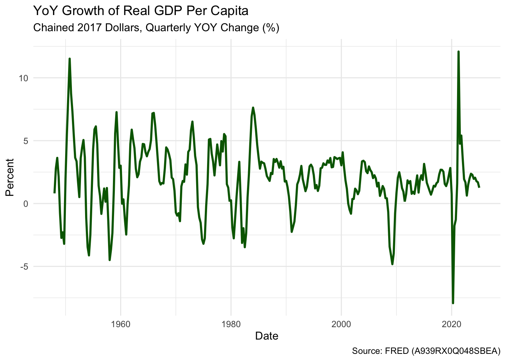

── Conflicts ────────────────────────────────────────── tidyverse_conflicts() ──
✖ dplyr::filter() masks stats::filter()
✖ dplyr::lag() masks stats::lag()
ℹ Use the conflicted package (<http://conflicted.r-lib.org/>) to force all conflicts to become errors
Registered S3 method overwritten by 'quantmod':
method from
as.zoo.data.frame zoo
── Attaching core tidyquant packages ─────────────────────── tidyquant 1.0.11 ──
✔ PerformanceAnalytics 2.0.8 ✔ TTR 0.24.4
✔ quantmod 0.4.28 ✔ xts 0.14.1── Conflicts ────────────────────────────────────────── tidyquant_conflicts() ──
✖ zoo::as.Date() masks base::as.Date()
✖ zoo::as.Date.numeric() masks base::as.Date.numeric()
✖ dplyr::filter() masks stats::filter()
✖ xts::first() masks dplyr::first()
✖ dplyr::lag() masks stats::lag()
✖ xts::last() masks dplyr::last()
✖ PerformanceAnalytics::legend() masks graphics::legend()
✖ quantmod::summary() masks base::summary()
ℹ Use the conflicted package (<http://conflicted.r-lib.org/>) to force all conflicts to become errors
fredr_set_key("da613fe30b4aba9f426b578cc2e5d192")
Productivity Growth
Fred version
# Download Real GDP per capita data from FREDFred_gdp_per_capita <-tq_get("A939RX0Q048SBEA", get ="economic.data", from ="1947-01-01")# Calculate Year-over-Year (YoY) percentage growthFred_gdp_per_capita <- Fred_gdp_per_capita %>%mutate(yoy_growth = (price /lag(price, 4) -1) *100)# Plot the YoY growthFred_gdp_per_capita %>%ggplot(aes(x = date, y = yoy_growth)) +geom_line(color ="blue", size =1) +labs(title ="US Real GDP per Capita: YoY Growth (%)",subtitle ="Source: FRED (A939RX0Q048SBEA)",x ="Date", y ="YoY % Growth") +theme_minimal()
Warning: Using `size` aesthetic for lines was deprecated in ggplot2 3.4.0.
ℹ Please use `linewidth` instead.
Warning: Removed 4 rows containing missing values or values outside the scale range
(`geom_line()`).

Maddison Project version
library(readxl)library(dplyr)library(ggplot2)# Read GDPpc sheet using the correct header row (row 3)maddison_us_gdppc2023 <-read_excel("maddison_project_2023db.xlsx", sheet ="GDPpc", skip =2)# Extract year and USA GDP per capitaus_gdp_yoy <- maddison_us_gdppc2023 %>%select(year, real_gdp_per_capita = USA) %>%filter(year >=1800) %>%mutate(real_gdp_per_capita =as.numeric(real_gdp_per_capita),yoy_growth = (real_gdp_per_capita /lag(real_gdp_per_capita) -1) *100 ) %>%filter(!is.na(yoy_growth))# Plot YoY growthggplot(us_gdp_yoy, aes(x = year, y = yoy_growth)) +geom_line(color ="steelblue", size =1) +labs(title ="US Real GDP per Capita: Year-over-Year Growth (%)",subtitle ="Source: Maddison Project Database (2023, GDPpc sheet)",x ="Year", y ="YoY % Growth" ) +theme_minimal()

Supplement: Real GPD per capita (actual figures)
library(ggplot2)# Plot real GDP per capita (level, not YoY)ggplot(us_gdp_yoy, aes(x = year, y = real_gdp_per_capita)) +geom_line(color ="darkgreen", size =1) +labs(title ="US Real GDP per Capita (2011 USD, Maddison Data)",subtitle ="Source: Maddison Project Database (2023, GDPpc sheet)",x ="Year", y ="Real GDP per Capita" ) +theme_minimal()